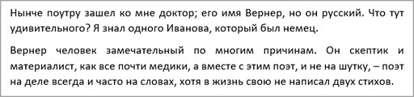

Выравнивание в Ворде
В этом уроке я покажу, как выровнять текст в программе Microsoft Word. Мы научимся смещать его в центр, вправо, влево и по ширине.
Когда вы печатаете в Ворде, по умолчанию текст размещается по левой стороне страницы. Но часто его нужно передвинуть в другую часть листа. Например, заголовок принято смещать в центр, а шапку документа - вправо. Эта процедура называется выравнивание.
Выравнивание — это положение текста на странице. Он может быть размещён по центру, по левому и правому краю, по ширине. Для этого в Word есть специальные кнопки в верхней части программы:
О них мы поговорим чуть позже. А пока немного о том, как не нужно выравнивать.
Неправильное выравнивание
Многие пользователи сдвигают текст неправильно: при помощи клавиши пробел или Tab на клавиатуре. Такое смещение считается ошибкой, так как расстояние от левого поля делается на «глазок». Из-за этого оно получается больше, чем нужно.
А если таким образом сделать выравнивание по правому краю, то возникнет масса проблем при редактировании. Слова будут скакать туда-обратно. Да и сам способ неудобный – приходится много раз нажимать на клавишу.
Кроме того, такой способ выравнивания может обернуться потеряй деловой репутации. Ведь проверить оформление легко: достаточно нажать на вверху панели инструментов Ворда.
Нажав на эту кнопку, в документе появятся точки и различные значки. Точками показываются пробелы. И если документ оформлен неправильно, это сразу же станет понятно.
Чтобы изменить отображение – убрать лишние точки и знаки, – нужно снова нажать на эту кнопку вверху программы.
На заметку. Документы с неправильным выравниванием в некоторых организациях не принимают.
Как выровнять текст правильно
Сделать выравнивание можно не только в начале печати, но и в конце. Это даже проще: закончили работу над документом и привели его в правильный вид.
Для смещения текста в программе Word есть четыре кнопки. Находятся они в верхней панели, в разделе «Главная».
— по левому краю
— по центру
— по правому краю
— по ширине
А теперь попробуем правильно сместить текст. Для начала напечатайте несколько слов в программе Word. Затем выделите их:
- Наведите курсор (стрелку или палочку) в самое начало или в самый конец текста.
- Нажмите левую кнопку мыши и, не отпуская ее, тяните в другой конец.
- Когда текст закрасится другим цветом (обычно серым или синим), это будет означать, что он выделен.
После выделения щелкните по кнопке выравнивания по центру. Напечатанные слова переместятся в середину страницы.
Может показаться, что это неправильный центр. Но всё верно, ведь поле (отступ) с левой стороны больше, чем с правой.
Таким же способом попробуйте выровнять слова по правому краю.
Что касается кнопки «По ширине». Она равняет с двух сторон – и слева, и справа. Если текста немного, то вы не заметите разницу между ней и кнопкой «По левому краю». А вот если текста много (несколько абзацев), то он станет ровным с двух сторон.
Пример выравнивания по левому краю:
По ширине:
Часто при таком смещении между словами увеличивается расстояние, как будто было нажато несколько пробелов. Так происходит из-за того, что текст растягивается по всей длине. Чтобы это исправить, нужно сделать расстановку переносов. Для этого перейдите на вкладку «Макет», щелкните по пункту «Расстановка переносов» и выберите «Авто».
Если вкладки «Макет» нет, перейдите на «Разметка страницы».
Совет. Если нужно сделать бланк документа, вставьте таблицу - одна строка, два столбца. Напечатайте в ней шапку, а потом скройте границы. Для этого выделите таблицу, нажав на , перейдите на вкладку «Конструктор». Затем щелкните по пункту «Границы» и выберите «Нет границы».